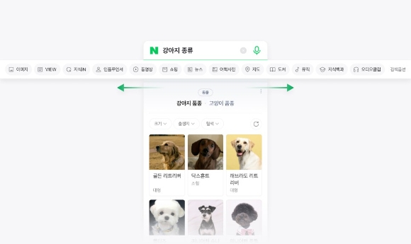
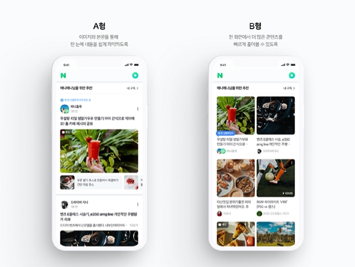
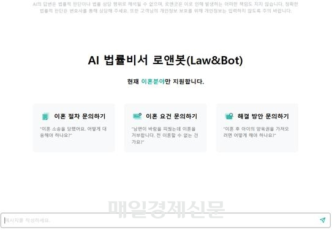
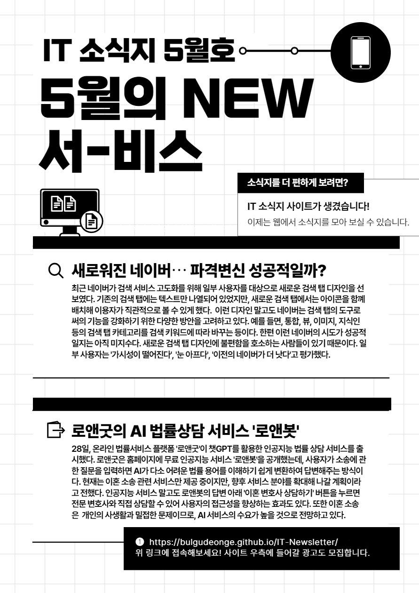

- MAR
- APR
- MAY
- JUN
- JUL
- AUG
- SEP
- OCT
- NOV
- DEC
- JAN
IT소식지 5월호 - 5월의 NEW 서-비스
끊임없이 쏟아지는 기업들의 서비스 덕분에 우리의 삶은 더욱 편리해지고 있습니다.
물론, 기업들은 지금도 이런 서비스들을 개발하기 위해 열심히 움직이고 있을 것입니다.
그렇다면 이번 5월에 새롭게 생겨난 서비스에는 무엇이 있을까요?
2가지의 새로운 서비스를 소개합니다.
새로워진 네이버⋯ 파격변신 성공적일까?


최근 네이버가 검색 서비스 고도화를 위해 일부 사용자를 대상으로 새로운 검색 탭 디자인을 선보였다.
기존의 검색 탭에는 텍스트만 나열되어 있었지만, 새로운 검색 탭에서는 아이콘을 함꼐 배치해
이용자가 직관적으로 볼 수 있게 했다.
이런 디자인 말고도 네이버는 검색 탭의 도구로써의 기능을 강화하기 위한
다양한 방안을 고려하고 있다.
예를 들면, 통합, 뷰, 이미지, 지식인 등의 검색 탭 카테고리를 검색 키워드에 따라 바꾸는 등이다.
한편 이런 네이버의 시도가 성공적일지는 아직 미지수다.
새로운 검색 탭 디자인에 불편함을 호소하는 사람들이 있기 때문이다.
일부 사용자는 '가시성이 떨어진다', '눈 아프다', '이전의 네이버가 더 낫다'고 평가했다.
로앤굿의 AI 법률상담 서비스 '로앤봇'

28일, 온라인 법률서비스 플랫폼 '로앤굿'이 챗GPT를 활용한 인공지능 법률 상담 서비스를 출시했다.
로앤굿은 홈페이지에 무료 인공지능 서비스 '로앤봇'을 공개했는데, 사용자가 소송에 관한 질문을 입력하면
AI가 다소 어려운 법률 용어를 이해하기 쉽게 변환하여 답변해주는 방식이다.
현재는 이혼 소송 관련 서비스만 제공 중이지만, 향후 서비스 분야를 확대해 나갈 계획이라고 전했다.
인공지능 서비스 말고도 로앤봇의 답변 아래 '이혼 변호사 상담하기' 버튼을 누르면
전문 변호사와 직접 상담할 수 있어 사용자의 법률 서비스 접근성을 향상하는 효과도 있다.
또한 이혼 소송은 개인의 사생활과 밀접한 문제이므로, AI 서비스의 수요가 높을 것으로 전망하고 있다.
